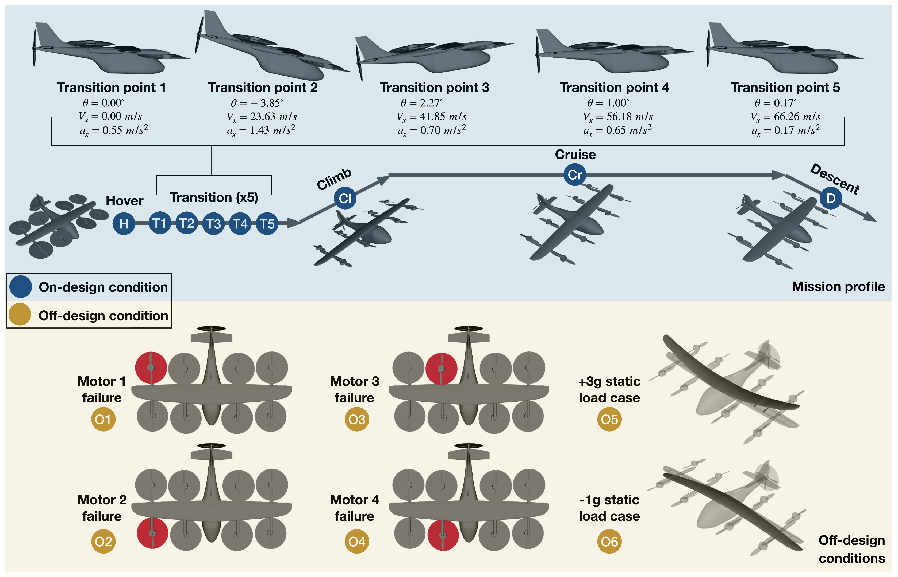
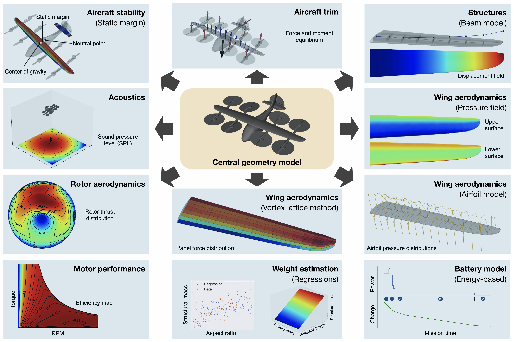
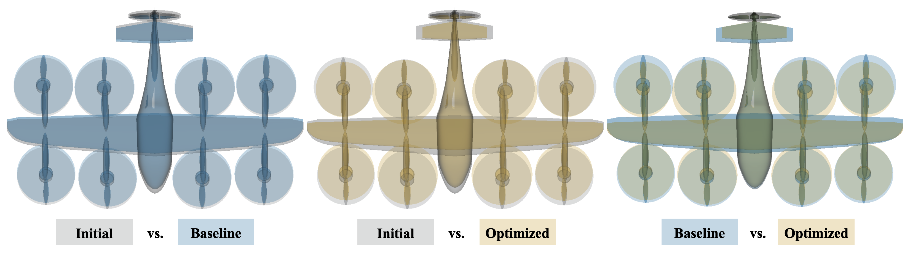
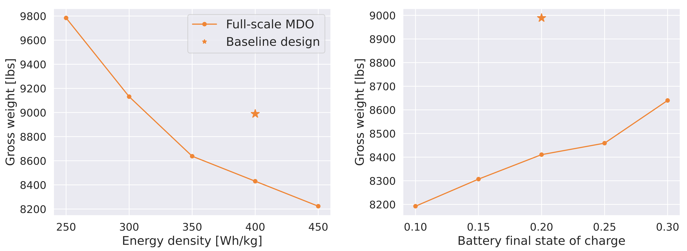

We apply large-scale multidisciplinary design optimization (MDO) to lift-plus-cruise air taxis. Dedicated lifting rotors and a cruise propulsor connect vehicle sizing to very different flight regimes, making system completeness and reliable optimization across mission and failure conditions central questions.
Optimizing the coupled aircraft
An integrated physics-based model accounts for nominal flight, engine-out cases, structural sizing, noise, and electrical limits in one design problem. The optimized NASA reference configuration reduces gross weight by 6.5% relative to its baseline, demonstrating a tractable system-level workflow across the conditions detailed below.
Paper: Ruh et al. [1]
Replacing blanket margins with modeled uncertainty
A separate study uses sensitivity-guided uncertainty propagation to compare nominal, safety-factor, and uncertainty-aware designs. For its assumed uncertainties and formulation, the uncertainty-aware design reduces empty weight by 10.4% relative to the safety-factor design, showing the cost of conservatism in that comparison.
Paper: Wang et al. [2]








Optimization problem
| Formulation element | Full-scale MDO | Wing structural sizing — aggregated | Wing structural sizing — nonaggregated |
|---|---|---|---|
| Case | NASA lift-plus-cruise vehicle: full-system design | ||
| Objective | Minimize aircraft mass. | Minimize wing structural mass. | Minimize wing structural mass. |
| Design variables | |||
| Aspect ratio (wing/tail) | 2 | — | — |
| Planform area (wing/tail) | 2 | — | — |
| Fuselage length | 1 | — | — |
| Rotor radius | 5 | — | — |
| Blade chord (5 × 4) | 20 | — | — |
| Blade twist (5 × 4) | 20 | — | — |
| Battery mass | 1 | — | — |
| Motor length | 5 | — | — |
| Lift-rotor speed — hover | 4 | — | — |
| Lift-rotor speed — transition (5 × 4) | 20 | — | — |
| Lift-rotor speed — OEI (4 × 7) | 28 | — | — |
| Pusher-rotor speed — transition (×5) | 5 | — | — |
| Pusher-rotor speed — climb/cruise/descent | 3 | — | — |
| Aircraft pitch — climb/cruise/descent/+3g/−1g | 5 | — | — |
| Elevator deflection — transition | 5 | — | — |
| Elevator deflection — climb/cruise/descent | 3 | — | — |
| Front spar thickness | 8 | 8 | 8 |
| Rear spar thickness | 8 | 8 | 8 |
| Top skin thickness | 8 | 8 | 8 |
| Bottom skin thickness | 8 | 8 | 8 |
| Aircraft pitch angle | — | 2 | 2 |
| Total design variables | 161 | 34 | 34 |
| Constraints | |||
| Hover total noise | 1 | — | — |
| Hover aircraft trim (Fz, Mx, My) | 3 | — | — |
| Climb aircraft trim (Fx, Fz, My) | 3 | — | — |
| Cruise aircraft trim (Fx, Fz, My) | 3 | — | — |
| Descent aircraft trim (Fx, Fz, My) | 3 | — | — |
| Transition aircraft trim (v̇, ṗ, q̇, ṙ) (5 × 4) | 20 | — | — |
| OEI aircraft trim (Fy, Fz, Mx, My, Mz) (4 × 5) | 20 | — | — |
| +3g and −1g vertical force | 2 | — | — |
| Static margin | 1 | — | — |
| Transition acceleration (u̇, ẇ) (5 × 2) | 10 | — | — |
| Skin-plate buckling | 14 | — | — |
| Final battery state of charge | 1 | — | — |
| Rotor-radius intersection | 2 | — | — |
| Motor torque safety margin | 9 | — | — |
| Hover rotor tip speed | 4 | — | — |
| Aggregated buckling constraints | — | 2 | — |
| Aggregated stress constraints | — | 2 | — |
| Aggregated z-displacement constraints | — | 2 | — |
| z-force equilibrium | — | 2 | 2 |
| Buckling constraints | — | — | 14 |
| Stress constraints | — | — | 80 |
| z-displacement constraints | — | — | 18 |
| Total constraints | 96 | 8 | 114 |
| Models and conditions | 15 conditions covering nominal flight segments, four one-engine-inoperative cases, and +3g/−1g static cases; coupled aerodynamic, propulsion, structural, acoustic, electrical, and stability models. | ||
| Representative source | System-Level, Large-Scale Multidisciplinary Design Optimization of an Air Taxi Concept | ||
| Source locator | Table 6, page 15; problem size summarized on page 19. | ||
References
- Marius L. Ruh, Michael A. P. Warner, Luca Scotzniovsky, Andrew H. Fletcher, Mark Z. Sperry, John T. Hwang. System-Level, Large-Scale Multidisciplinary Design Optimization of an Air Taxi Concept. Journal of Aircraft, 2026.DOIPDF
@article{ruh2026system, author = {Marius L. Ruh and Michael A. P. Warner and Luca Scotzniovsky and Andrew H. Fletcher and Mark Z. Sperry and John T. Hwang}, title = {System-Level, Large-Scale Multidisciplinary Design Optimization of an Air Taxi Concept}, journal = {Journal of Aircraft}, year = {2026}, pages = {1-24}, doi = {10.2514/1.c038533}, url = {https://doi.org/10.2514/1.c038533}, note = {Metadata verification: Crossref DOI} } - Bingran Wang, Marius L. Ruh, Aoran Tian, Luca Scotzniovsky, John T. Hwang. Large-scale MDO under uncertainty of an eVTOL aircraft using dimension reduction via global sensitivity analysis. AIAA AVIATION FORUM AND ASCEND 2025, 2025.DOIPDF
@inproceedings{wang2025large, author = {Bingran Wang and Marius L. Ruh and Aoran Tian and Luca Scotzniovsky and John T. Hwang}, title = {Large-scale MDO under uncertainty of an eVTOL aircraft using dimension reduction via global sensitivity analysis}, booktitle = {AIAA AVIATION FORUM AND ASCEND 2025}, year = {2025}, doi = {10.2514/6.2025-3344}, url = {https://doi.org/10.2514/6.2025-3344}, note = {Metadata verification: Crossref title} } - Sebastiaan P. van Schie, Marius L. Ruh, Andrew H. Fletcher, Michael Warner, Mark Sperry, Luca Scotzniovsky, Nicholas C. Orndorff, Ru Xiang, Jiayao Yan, Han Zhao, Joshua Krokowski, Jiun-Shyan Chen, Darshan Sarojini, Hyunjune Gill, Seongkyu Lee, Andrew C. Tagg, Ryan Anderson, Eric Green, Cibin Joseph, Andrew Ning, Zeyu Cheng, Zhi Cao, Chunting Mi, Alexandre T. Guibert, Ashley Cronk, Alicia A. Kim, Shirley Meng, Christopher Silva, John T. Hwang. Large-Scale Distributed Multidisciplinary Design Optimization of the NASA Lift-Plus-Cruise Air Taxi Concept. AIAA SCITECH 2025 Forum, 2025.DOIPDF
@inproceedings{vanschie2025large, author = {Sebastiaan P. van Schie and Marius L. Ruh and Andrew H. Fletcher and Michael Warner and Mark Sperry and Luca Scotzniovsky and Nicholas C. Orndorff and Ru Xiang and Jiayao Yan and Han Zhao and Joshua Krokowski and Jiun-Shyan Chen and Darshan Sarojini and Hyunjune Gill and Seongkyu Lee and Andrew C. Tagg and Ryan Anderson and Eric Green and Cibin Joseph and Andrew Ning and Zeyu Cheng and Zhi Cao and Chunting Mi and Alexandre T. Guibert and Ashley Cronk and Alicia A. Kim and Shirley Meng and Christopher Silva and John T. Hwang}, title = {Large-Scale Distributed Multidisciplinary Design Optimization of the NASA Lift-Plus-Cruise Air Taxi Concept}, booktitle = {AIAA SCITECH 2025 Forum}, year = {2025}, doi = {10.2514/6.2025-0362}, url = {https://doi.org/10.2514/6.2025-0362}, note = {Metadata verification: Crossref title} }
Research connections